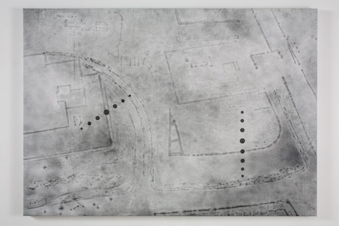

Regeneration 2006 - 2010
Yokohama I, 2007
Graphite on polyester and acrylic ground
87 cm x 109 cm
Regeneration
The genesis of Regeneration was ten years ago when I began to visit and photograph cities which had been destroyed by war, or by other man-made or natural causes and subsequently rebuilt. The cities of Berlin, Chicago, Tokyo and Yokohama have since become the focus through which to explore ideas of loss and impermanence and the restructuring of our occupied space, both real and through memory. All the works are concerned with one thing taking the place of another in our physical world and collective consciousness, the disappearance and replacement of physical structures: lost and found space.
The project is ongoing and organic in structure - fitting for its subject. It incorporates work in various media and an essential element of my practice has always been the alignment of subject and method, a conceptual marriage where the materials and construction are as much a part of the subject as is the image. The works here relate the visual with some of the physical processes employed by archaeology or forensic science (for instance the methodical revelation of a surface or the analysis of the past through exposed layers). I think of them as urban palimpsests or artificial excavations. The drawings, paintings and prints in Regeneration are hybrid works which use the physicality of painting to create something ephemeral, a reversal in the normal order of things.
The dichotomy of absence and presence has always been integral to my work: the evidence or trace of something which stands as a reminder of society's vulnerabilities and also those of the individual. The metaphor of the city and of isolated buildings is for me an interesting one, the balance between the precarious and the sustainable. The city contains elements of both the past and future, it is in a sense transitional in spite of its physicality and so the use of photography as source material seems apt because of the inherent paradox of making something which is fleeting, a moment in time, permanent. The cities I am photographing have, on the whole, already regenerated after destruction or damage and so I am reflecting on the past and anticipating a possible, changed future: a blueprint for the unknown.
Ground Plan IV, 2006
Graphite on paper 59.5 cm x 84.5 cm
Purchased by the British Museum, 2007
Floor Plan III (From Regeneration),
2007
Graphite on paper
59.5 cm x 84.5 cm
Private Collection

Painting-Tokyo 1, 2008
Oil, pigment on gesso and polyester
97 cm x 137 cm
The City of London Drawings, 2010
In 2010 the Regeneration project was concluded with the City of London Drawings, a related set of five works: two aerial plan drawings and three elevations.
The two plan drawings refer to a section of a map, drawn in 1942 by Cecil Brown, showing the devastation to the City of London caused by the Blitz which began in 1940. By isolating an area of the map which represented approximately half a square mile I began to edit the spaces formed by damage or wholeness. The resulting drawings; Map of Ruin and Map of Remains, make visual an idea of the discrepancy between lost and found space.
The three elevation drawings are based on my own site photographs of the churches of St Alban, Greyfriars and St Augustine. These three churches are the only ones within the area covered in the two plan drawings which were badly damaged in the Blitz but have remained as ruins or partial structures rather than having been restored as churches or demolished by postwar developers. The ruin of Greyfriars in particular was preserved like an architectural Vanitas who’s existence is evidence of the trauma of the Blitz and a momento mori of our fragile present peace.
|
Studio view - Map of Ruin, Map of Remains and Greyfriars, all 2010 |
Detail of St. Augustine |
 Prints
from Regeneration Prints
from Regeneration
Copyright
notice
|